10 ที่เที่ยวตรังอยากให้ลองไปเที่ยว
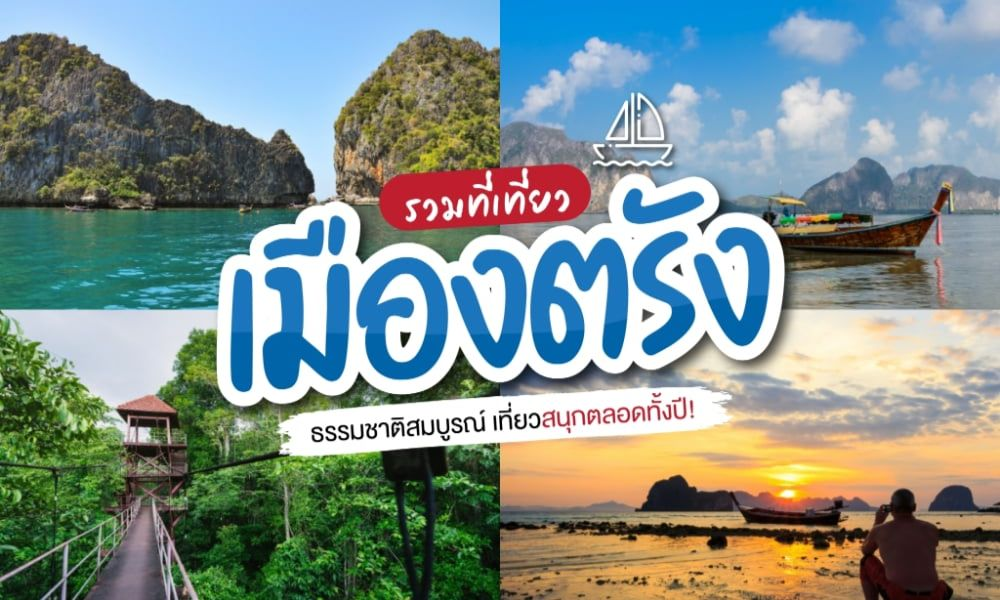ตรัง (Trang) แม้จะเป็นจังหวัดที่ไม่เด่นดัง ถ้าเปรียบกับภูเก็ต สมุย หรือกระบี่ แต่ตรังก็ยังคงเป็นอัญมณีเม็ดงามในหมู่ผู้แสวงหาทะเล หาดทรายและสายลม ด้วยชายหาดอันเงียบสงบ ทะเลสีฟ้าระยิบระยับ และโลกใต้ท้องทะเลที่มีเสน่ห์ รวมถึงพะยูนที่หายากอย่างยิ่ง และงานแต่งงานใต้น้ำ ถึงจะเป็นเมืองรอง แต่ตรังก็มีที่เที่ยวต้องลองเที่ยวมากมายไว้ต้อนรับผู้มาเยือน
1. วังผาเมฆ (Wang Pha Mek)
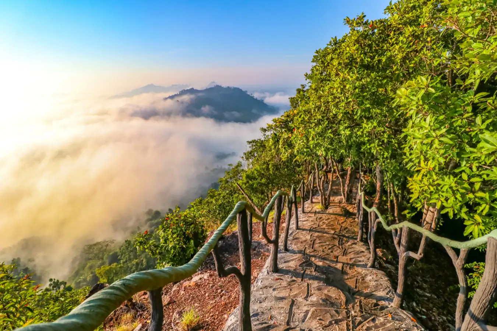ตรังไม่ได้มีดีแค่ทะเลสวยหาดทรายงาม ทะเลหมอกก็มีนะบอกให้ “วังผาเมฆ” อยู่ในเขตป่าสงวนแห่งชาติป่าสายควนและเกาะอ้ายกลิ้ง ที่ตำบลวังมะปราง อำเภอวังวิเศษ เป็นจุดชมพระอาทิตย์ขึ้นท่ามกลางทะเลหมอกสุดอลังการ บนความสูง 1600 เมตร จากระดับน้ำทะเล ในวันที่ฟ้าเปิดเห็นได้ไกลถึงทะเลอันดามัน และเกาะต่างๆ ของกระบี่ ที่นี่ยังมีจุดกางเต็นท์และบ้านพักให้นอนชมธรรมชาติสวยๆ ด้วย
2. อ่าวบุญคง (Boon kong Bay)
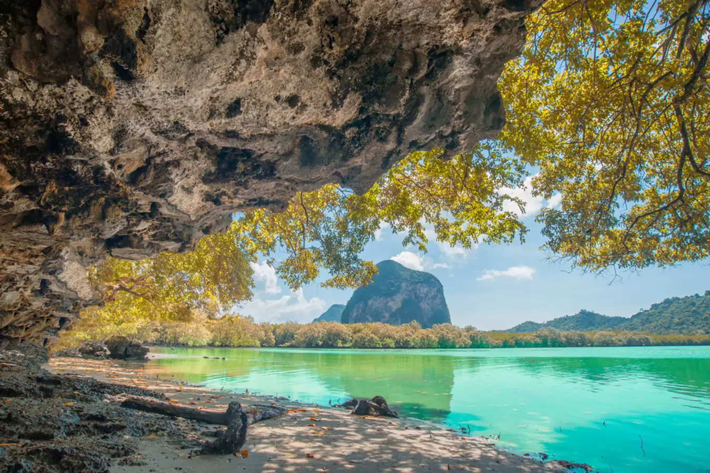“อ่าวบุญคง” มีน้ำสีมรกตสวย โอบล้อมด้วยภูเขาหินปูนสูงใหญ่ เช้าถึงได้ด้วยทางเรือเท่านั้น ความพิเศษของที่นี่คือ เมื่อน้ำลดจะมีแนวปลูกหญ้าทะเลให้เห็น ซึ่งเป็นแหล่งอาหารของพะยูนฝูงใหญ่ ที่ชุมชนช่วยกันอนุรักษ์ เปิดให้นักท่องเที่ยวได้เรียนรู้และลงมือปลูกด้วยตัวเอง ในยามน้ำขึ้นเต็มที่ก็สามารถล่องเรือลัดเลาะชมธรรมชาติอันงดงาม โดยมีไฮไลท์อยู่ที่ภาพเขียนสีโบราณที่พิงถ้ำหินปูนอายุ 2,000 – 4,000 ปี ก่อน
3. ถ้ำเขาช้างหาย (Khao Chang Hai cave)
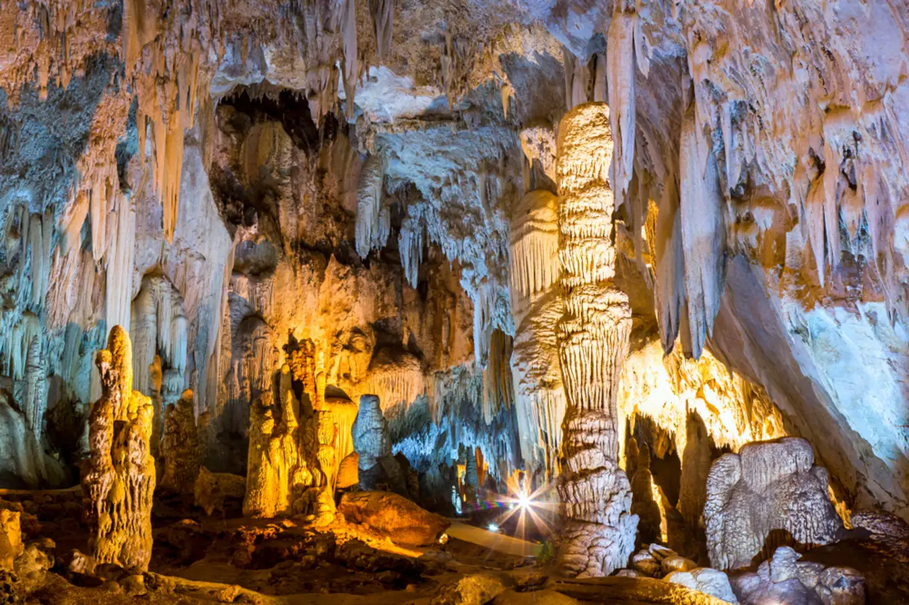“ถ้ำเขาช้างหาย” เป็นที่เที่ยวธรรมชาติที่อยู่ไม่ไกลจากตัวเมืองตรัง ไปตามถนนสายตรัง-นาโยง ก็จะมองเห็นภูเขา 2 ลูก ตั้งตระหง่านอยู่กลางท้องนา ถ้ำเขาช้างหายเป็นถ้ำหินงอกหินย้อยขนาดใหญ่ มีถึง 6 ถ้ำใหญ่ๆ ภายในถ้ำมีทั้งกว้างโปร่งเดินชมได้สบายๆ บางส่วนก็แคบจนต้องมุดเข้าไปเลยทีเดียว แต่ก็คุ้มค่ากับการได้เห็นหินงอกหินย้อยที่สมบูรณ์ รูปทรงต่างกันไป บางส่วนยาวถึงพื้นจนเหมือนเป็นเสาค้ำยันถ้ำสวยงาม
4. เกาะเหลาเหลียง (Laoliang Island)
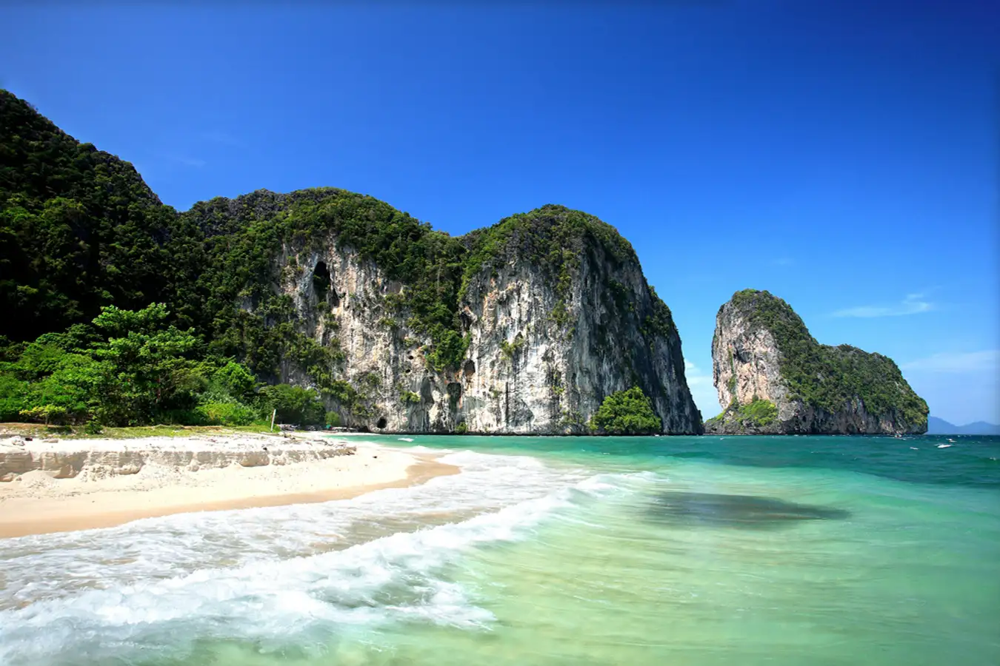“เกาะเหลาเหลียง” เพชรเม็ดงามแห่งอุทยานแห่งชาติหมู่เกาะเภตรา อำเภอปะเหลียน โดดเด่นด้วยภูเขาหินปูน 2 ลูก กลางทะเลสีมรกต บรรยากาศน่าพักผ่อนสุดๆ หาดทรายสีขาวละเอียด แนวปะการังสวยงามโดยเฉพาะสายพันธุ์หายากอย่างปะการังอ่อนเจ็ดสี และกัลปังหาหลากสี ธรรมชาติสวยไม่ถูกทำลายแบบนี้ เพราะมีการจำกัดจำนวนนักท่องเที่ยว และเปิดให้เที่ยวในเดือนตุลาคมถึงกลางพฤษภาคมเท่านั้น
5. เกาะมุก (Muk Island)
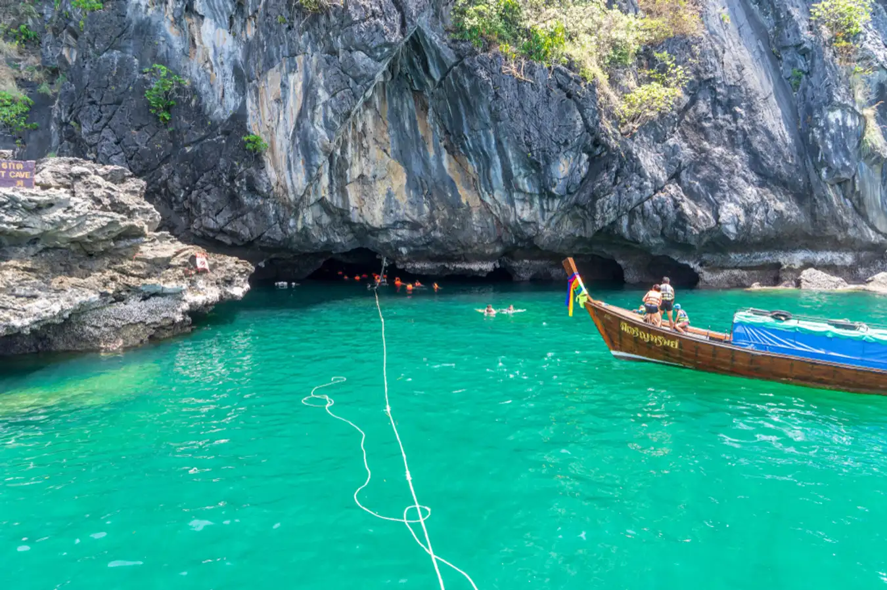อีกหนึ่งเกาะสวยของทะเลตรัง “เกาะมุก” เป็นเกาะขนาดใหญ่อยู่ในเขตอุทยานแห่งชาติหาดเจ้าไหม นอกจากหาดทรายที่สวย ความใสสะอาดของผืนน้ำรอบเกาะแล้ว ไฮไลท์ของเกาะคือ “ถ้ำมรกต” ที่สวยงามสุดๆ แต่ต้องรอน้ำลดถึงจะเข้าไปได้ บนเกาะมีทั้งหมู่บ้านชาวประมง และรีสอร์ตสำหรับนักท่องเที่ยวที่ต้องการพักบนเกาะ แต่จะปิดงดรับนักท่องเที่ยวในวันที่ 1 มิถุนายน ถึง 30 กันยายน ของทุกปีนะ
6. เขาจมป่า (Khao Jom Pa)
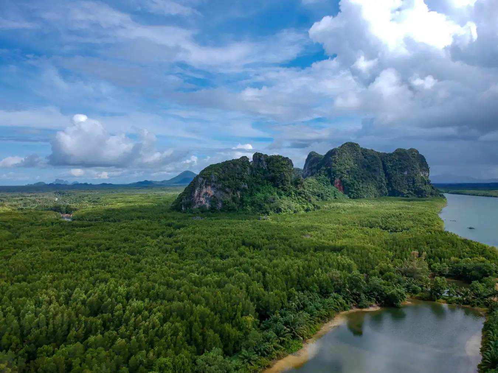“เขาจมป่า” เป็นแหล่งท่องเที่ยวของบ้านน้ำราบ อำเภอกันตัง ที่ยังสดใสสวยงาม น้อยคนจะรู้จัก แต่บอกเลยว่าถ้ามาที่นี่จะไม่ผิดหวังแน่นอน ธรรมชาติรอบๆ เขาจมป่าสมบูรณ์บริสุทธิ์ เพราะที่นี่เป้นหมู่บ้านชาวประมงขนาดเล็กที่มีวิถีชีวิตเรียบง่าย มีกิจกรรมให้นักท่องเที่ยวนั่งเรือล่องไปตามทางคดเคี้ยวชมความเขียวขจีของผืนป่าโกงกางที่กว้างใหญ่ และขึ้นเขาจมป่า เพื่อชมวิวสุดอลังการแบบ 360 องศา
7. วังเทพทาโร (Wang Thep Taro)
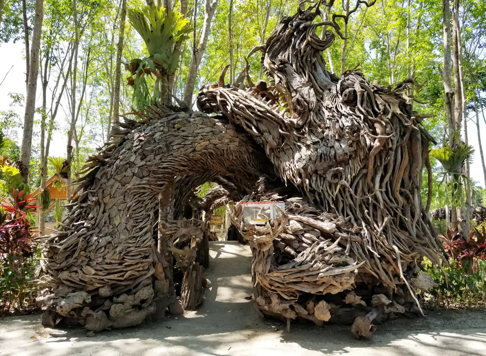ส่วนที่เที่ยวตรังมาแรงของอำเภอห้วยยอด ต้องยกให้ “วังเทพทาโร” ที่เกิดจากฝีมือของ “ครูจรูญ แก้วละเอียด” ผู้นำรากไม้สมุนไพรพื้นบ้านมีกลิ่นหอม ชื่อว่า “จวง” หรือ “จวงหอม” มาประดิดประดอยสร้างสรรค์เป็นดงมังกรน้อยใหญ่ที่มีศิลปะสวยงามน่าทึ่ง แล้วตั้งชื่อสถานที่นี่ว่า “วังเทพธาโร” หรือ “ท่อนไม้เทวดา” และยังมีผลิตภัณฑ์จากธรรมชาติดีๆ ให้ได้ชมและเลือกซื้อกันด้วย
8. เกาะลิบง (Libong Island)
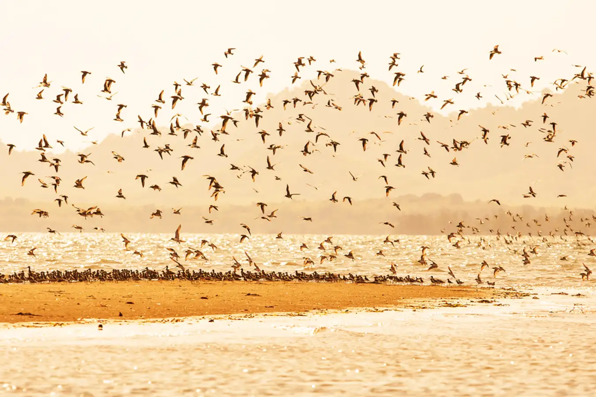เกาะลิบง” นั้นยืนหนึ่งเสมอเมื่อคิดถึงสถานที่ท่องเที่ยวของตรัง เพราะธรรมชาติชายหาดยังสวยงาม รวมถึงวิถีชีวิตและวัฒนธรรมชาวบ้านที่เรียบง่าย ล้วนเป็นเสน่ห์ที่ทำให้ เกาะลิบงอยู่ในใจของ “นักท่องเที่ยวเสมอ ที่นี่ยังเป็นแหล่งหญ้าทะเลอาหารของเหล่าพะยูนผืนใหญ่ที่สุด และมีแหล่งดูนกทะเลชนิดที่หลากหลายมีชื่อเสียงด้วย มีบริการเรือพาเที่ยวชมทัศนียภาพสวยๆ รอบเกาะ
9. หาดปากเมง (Pak Meng Beach)
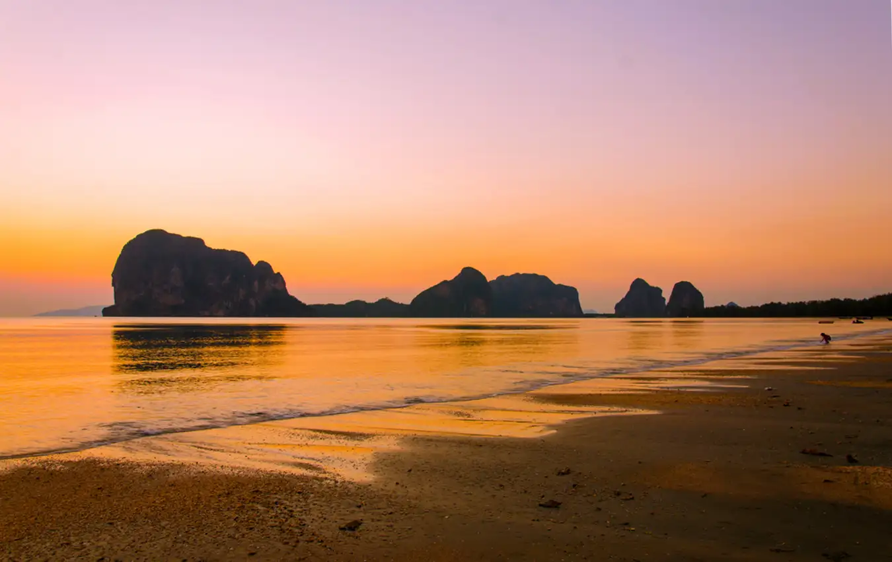อีกหนึ่งที่เที่ยวตรังยอดนิยม “หาดปากเมง” ในอำเภอสิเกา เป็นชายหาดรูปทรงพระจันทร์เสี้ยว ความยาวราว 5 กิโลเมตร มีจุดเด่นคือเขารูปคล้ายคนนอนหงายอยู่กลางทะเล หรือที่ชาวตรังเรียกว่า “เขาเมง” นั่นเอง หาดปากเมงยังเป็นจุดที่ชมพระอาทิตย์ตกที่ขึ้นชื่อ มีมุมให้ถ่ายรูปทิวทัศน์สวยๆ มากมาย ที่นี่ยังเป็นศูนย์รวมเรือไปเที่ยวเกาะต่างๆ อีกด้วย
10. เกาะกระดาน (Kradan Island)
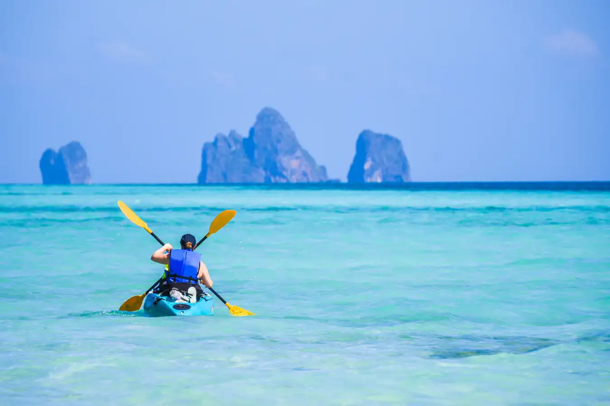มาเที่ยวตรังแล้วไม่ได้แวะ “เกาะกระดาน” ถือว่ามาไม่ถึง เพราะมีชื่อเสียงโด่งดังไปทั่วโลก ในฐานะสถานที่จัดงาน “วิวาห์ใต้สมุทร” นั่นเอง ซึ่งนั่นก็เป็นการการันตีได้ว่าที่นี่สวยงามอลังการน่าไปเยือนมากแค่ไหน และยังเป็นจุดดำน้ำตื้นยอดนิยม มีแนวปะการังน้ำตื้นหลายชนิดให้ชื่นชม และที่หน้าหาดยังเป็นที่ชมพระอาทิตย์ขึ้นที่สวยงามมาก มองเห็นเกาะมุก เกาะแหวน เกาะเชือก เกาะม้า เรียงไปจนถึงเกาะไห เมืองตรังมีสีสัน และที่เที่ยวธรรมชาติสวยงามไม่แพ้เมืองใดๆ ในภาคใต้ หาวันว่างแล้วจองตั๋วเครื่องบินไปตรังกันดีกว่า ถือโอกาสฉลองเปิดประเทศต้อนรับนักท่องเที่ยวไปพร้อมๆ กับเก็บเกี่ยวประสบการณ์การเดินทางอันน่าประทับใจไม่รู้ลืม